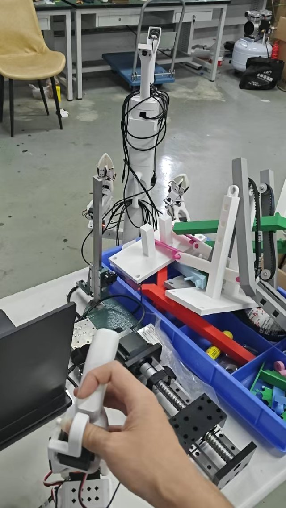
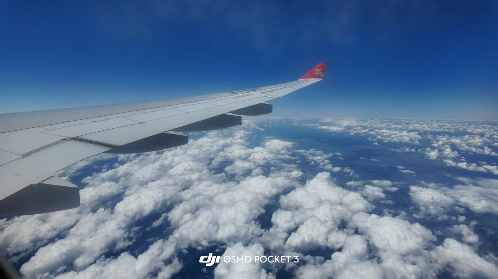
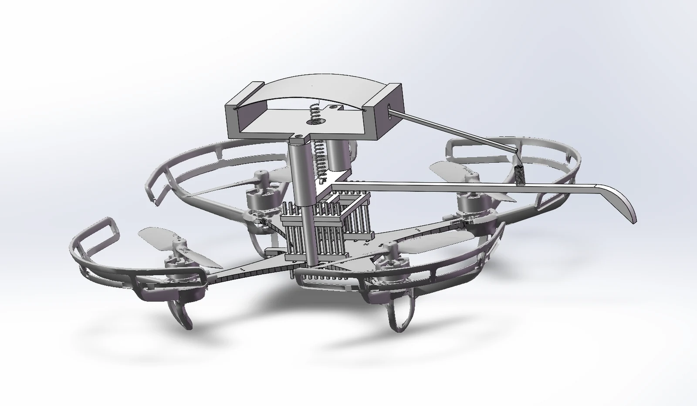

FIELD NOTES ON ROBOTICS & EVERYDAY LIFE
保持好奇，
把想法做出来。
A little curiosity. A world to explore.
你好，我是 Cutus。
中国科学技术大学 · 2025 级机器人工程本科生
在中国科大人形机器人研究院空中机器人课题组，探索机器人如何飞行、附着与栖息。这里记录我的工程实践、论文阅读，以及从想法走向实验的过程。
- Crazyflie 飞控 · 闭环学习中
- 双模态栖息 · 样机实测中

FIELD NOTE / ABOVE THE CLOUDS
在云层之上，
把目光放得更远。
从窗边看出去，天空与云海都变得很近。
研究之外，也把沿途的风景留在这里。
从飞机上拍下的一页天空。
SELECTED WORK
在真实问题里，学习机器人。

OPEN NOTEBOOK
让每一条笔记，有下一步。
SELECTED READING / 三篇精读选读
LEARNING IN PUBLIC
持续学习，也留下过程。
Crazyflie 飞控学习面板10 个阶段 · 官方文档 · 实践步骤 · 验收产物展开学习面板 +
学习面板需要 JavaScript。你也可以阅读完整学习路线。
AWAY FROM THE DESK
把目光，暂时交给远处。
书桌之外，走过城市与树影。
让阅读，也有片刻停顿。


LET’S CONNECT
关于机器人，也关于新的想法。
欢迎交流机器人实践、论文阅读与课程学习。
FRIENDS
友情链接
mav
同乡同好的同学